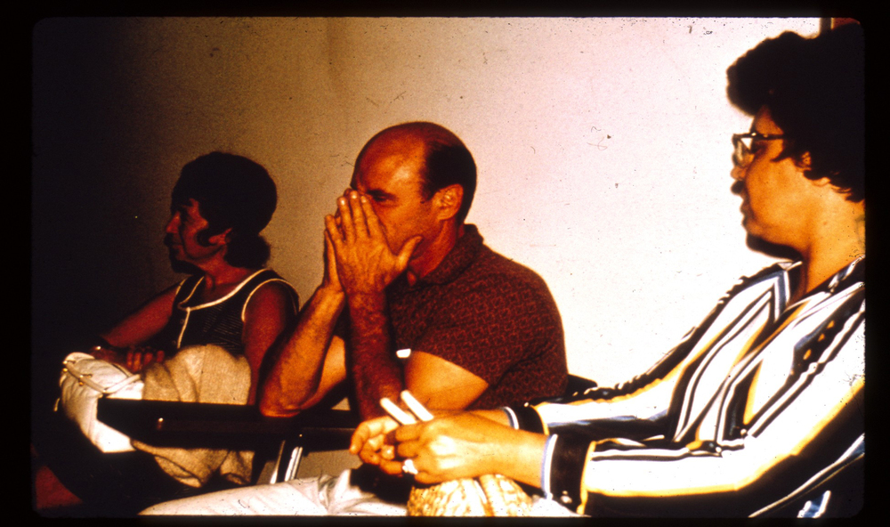

GRIEVANCES
"It took quite a while before we became convinced that he was really suffering and that we had to release him."
THE FIRST PRISONER RELEASED
Less than 36 hours into the experiment, Prisoner #8612 began suffering from acute emotional disturbance, disorganized thinking, uncontrollable crying, and rage. In spite of all of this, we had already come to think so much like prison authorities that we thought he was trying to "con" us – to fool us into releasing him.
When our primary prison consultant interviewed Prisoner #8612, the consultant chided him for being so weak, and told him what kind of abuse he could expect from the guards and the prisoners if he were in San Quentin Prison. #8612 was then given the offer of becoming an informant in exchange for no further guard harassment. He was told to think it over.
During the next count, Prisoner #8612 told other prisoners, "You can't leave. You can't quit." That sent a chilling message and heightened their sense of really being imprisoned. #8612 then began to act "crazy," to scream, to curse, to go into a rage that seemed out of control. It took quite a while before we became convinced that he was really suffering and that we had to release him.
PARENTS AND FRIENDS
The next day, we held a visiting hour for parents and friends. We were worried that when the parents saw the state of our jail, they might insist on taking their sons home. To counter this, we manipulated both the situation and the visitors by making the prison environment seem pleasant and benign. We washed, shaved, and groomed the prisoners, had them clean and polish their cells, fed them a big dinner, played music on the intercom, and even had an attractive former Stanford cheerleader, Susie Phillips, greet the visitors at our registration desk.
When the dozen or so visitors came, full of good humor at what seemed to be a novel, fun experience, we systematically brought their behavior under situational control. They had to register, were made to wait half an hour, were told that only two visitors could see any one prisoner, were limited to only ten minutes of visiting time, and had to be under the surveillance of a guard during the visit. Before any parents could enter the visiting area, they also had to discuss their son's case with the Warden. Of course, parents complained about these arbitrary rules, but remarkably, they complied with them. And so they, too, became bit players in our prison drama, being good middle-class adults.
Some of the parents got upset when they saw how fatigued and distressed their son was. But their reaction was to work within the system to appeal privately to the Superintendent to make conditions better for their boy. When one mother told me she had never seen her son looking so bad, I responded by shifting the blame from the situation to her son. "What's the matter with your boy? Doesn't he sleep well?" Then I asked the father, "Don't you think your boy can handle this?"
He bristled, "Of course he can – he's a real tough kid, a leader." Turning to the mother, he said, "Come on Honey, we've wasted enough time already." And to me, "See you again at the next visiting time."
